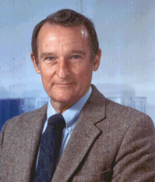

L'informatique une science jeune et très innovatrice, elle est maintenant utilisé
dans tous les domaines tels que les mathématiques, l'économie, la médecine
et bien d'autres ! Pour en arriver la, l'informatique a pu avancer grâce à
de nombreuses personnes qui ont innovés dans certains sous domaines comme
les composants ou même les interactions homme-machine ! Nous allons dans ce site
web vous présenter 2 personnes qui ont changés le monde de l'informatique à tout jamais !

Machines et composants
Seymour Roger Cray
Né le 28 septembre 1925 aux USA à Chippewa Falls, Wisconsin
Mort le 5 octobre 1996
Éducation :
Ingénieur, informaticien, ingénieur électricien, mathématicien, et homme d'affaire
1950 : baccalauréat en sciences
1951 : master en mathématiques
Vie Professionelle :
1950-1957 : il travaille pour l'ERA, Engineering Research Associates, première entreprise fabriquant des ordinateurs scientifiques
1957 : il cofonde la CDC, Control Data Corporation
1972 : il cofonde Cray Research Inc
1989 : il fonde Cray Computer Corporation
1995 : il fonde SRC (Seymour Roger Cray) Computer Inc
Innovations :
Il a créé de nombreux ordinateurs puissants pour son époque, tels que :
ERA 1103
CDC 6600
Cray-1, 2 et 3
il fût considéré pendant près de 30 ans comme le fabriquant des ordinateurs les plus rapides de son époque
il a reçu de nombreux prix félicitant son travail comme la Médaille Howard N. Potts en 1979 ou encore le Prix Eckert-Mauchly en 1989
Un prix a été créé en son honneur ; le Seymour Cray Computer Engineering Award
Même domaine : (Appuyez sur leurs photos pour en savoir plus !)
Interaction homme-machine
Douglas Carl Engelbart
Né le 30 janvier 1925 aux USA à Portland, Oregon
Mort le 2 juillet 2013
Éducation :
ingénieur et inventeur
1945 : étudie à l'université de l'Oregon
1948 : licence en ingénierie électrique
1952 : diplôme d'ingénieur à l'université de Californie à Berkeley
1955 : doctorat d'ingénierie électrique et informatique
il participe notamment au CALDIC, projet d'ordinateur digital de Californie, lors de ses études
Vie Professionelle :
Après ses études : chercheur au SRI, Stanford Research Institute et obtient une subvention de la part de l'ARPA, Advanced Research Projects Agency
1988 : il crée le Doug Engelbart Institute avec sa fille et anime des séminaires à l'université de Stanford de 1989 à 2000
Innovations :
Développe le Online System, la souris (1965), l'hypertexte, ainsi que les premières interfaces graphiques
Vend une licence pour la souris à Apple pour environ 40 000$
Participe à la création du projet ARPANET
Au cours de sa carrière il a déposé un total de 21 brevets, et a reçu un total de 17 prix récompensant son travail entre 1990 et 2014, dont le prix Turing, hommage à Alan Turing inventeur de la machine de Turing
Ses travaux sont aujourd'hui conservés au musée de l'histoire de l'ordinateur de Californie et à l'université de Stanford